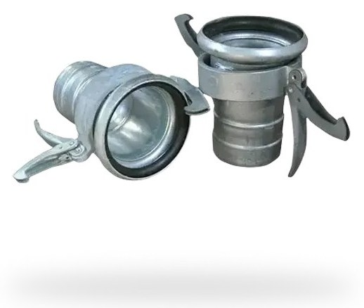
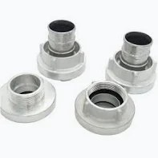
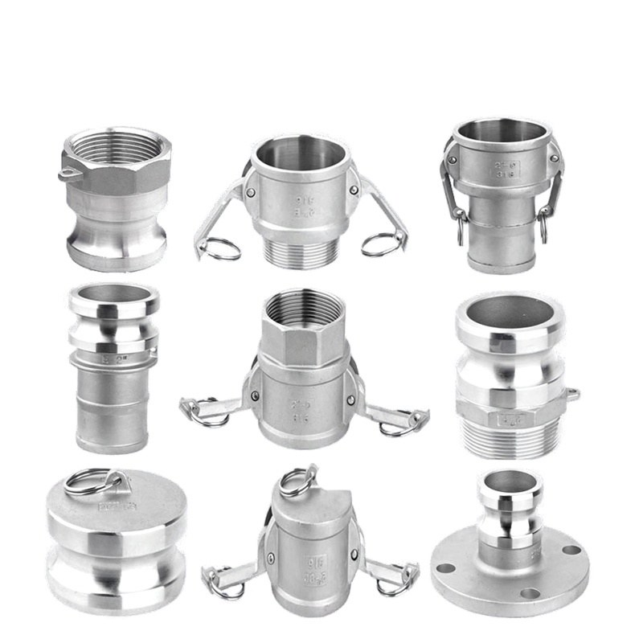
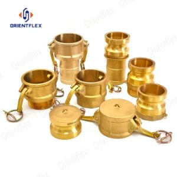
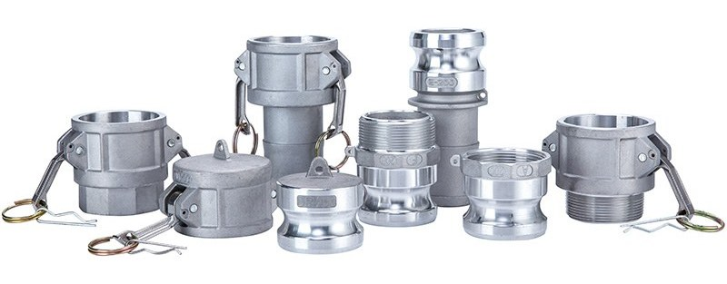
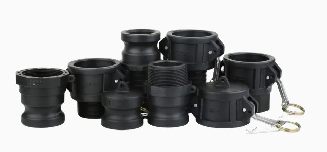
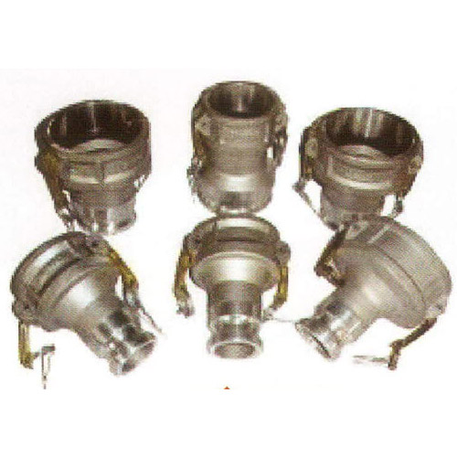
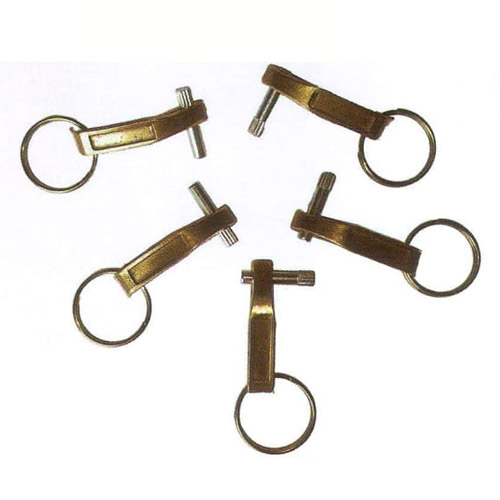

Bauer Coupling
Sizes3" – 8"
Couplings & Connectors · 9 products
Bauer, Miller, Storz and camlock couplings for fast, secure hose connections. Ask Fakhri Tools for a quote on WhatsApp, by phone or at our trade counter in Al Quoz Industrial Area 3.
Sizes3" – 8"

Sizes3" – 8"

Sizes1½" – 4"

Sizes½" – 6"

Sizes½" – 6"

Sizes½" – 6"

Sizes1" – 3"

Sizes2" – 4"

Sizes2" – 6"
We list aluminium Storz couplings from 1½" to 4", plus Bauer and Millar (Miller) couplings from 3" to 8" for quick hose connections. Camlock couplings come in SS, brass and aluminium from ½" to 6" and in PVC from 1" to 3", with NPT or BSPT threads, plus aluminium reducing camlocks from 2" to 4" and brass camlock legs from 2" to 6".
Storz couplings are symmetrical: two of the same size lock together with no male or female half, which makes them common on water and pump hoses. Bauer couplings use a ball-and-socket style joint that allows some angle, which helps on long lines laid over uneven ground. Camlocks join by closing two cam arms; our camlock types chart explains which letter is which.
For a quote, WhatsApp the coupling type, size, material, thread (NPT or BSPT) or hose end, and the quantity.
A Storz coupling has two identical halves that twist together. A camlock has a male adapter and a female coupler held by cam arms.
Yes. Rubber washers for Chicago, camlock, Storz, Bauer and Miller couplings are listed on our gaskets page.
It depends on which half you need and whether it ends in a thread or a hose shank. Our camlock couplings page lists types A to F, DC and DP.
Yes. We are at Warehouse 8, 8th Street, Al Quoz Industrial Area 3, open Monday to Saturday, 7:30am to 6:00pm. Send your list on WhatsApp first and we confirm it before you come.
Send a photo of it, or its nameplate, on WhatsApp and we will tell you if we have it.